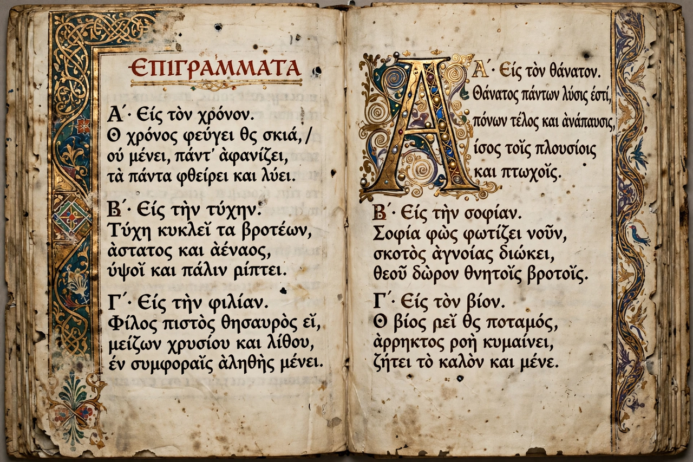

The Greek Anthology (Anthologia Graeca) is a vast collection of Greek epigrams and short poems spanning from the classical period to Byzantine times — some 4,500 poems by several hundred authors — assembled from a series of earlier anthologies. It preserves much of what survives of the Greek epigram, from tombstone inscriptions and dedications to love poems, drinking songs, satires and riddles.
| Greek Anthology | |
|---|---|
| Contents | c. 4,500 epigrams, 7th c. BC – 10th c. AD |
| Main sources | Palatine Anthology; Anthology of Planudes |
| First compiler | Meleager of Gadara (c. 100 BC) |
The first "Garland" was compiled around 100 BC by Meleager of Gadara, who in his proem likened each poet to a flower. Later garlands followed — by Philip of Thessalonica (1st century AD) and Agathias (6th century) — until, around 900 AD, Constantine Cephalas merged them into a single great collection arranged by subject. Two descendants of Cephalas's anthology survive: the Palatine Anthology, a 10th-century manuscript rediscovered at Heidelberg in 1606, and the shorter anthology of Maximus Planudes (1301).
The fifteen books of the Palatine Anthology include Christian epigrams, erotic poems (among them the Musa Puerilis of Strato), funerary and dedicatory epigrams, epideictic pieces, convivial and satirical poems — many by Lucian and Lucillius — and the famous sequence of epigrams on works of art. Contributors range from Sappho, Plato (as epigrammatist) and Callimachus to the Byzantine court poets.
Through Latin imitations and Renaissance editions, the Anthology shaped the European epigram tradition; its poems have been translated repeatedly, notably in the Loeb edition of W. R. Paton, and individual pieces — such as the epigrams on the Spartan dead at Thermopylae — remain among the most quoted short poems in any language.
See also: Epigram · Theocritus